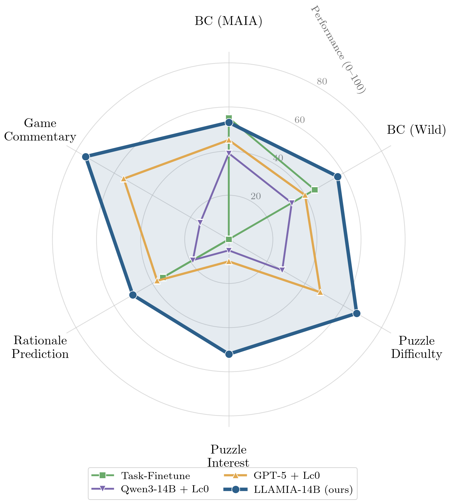
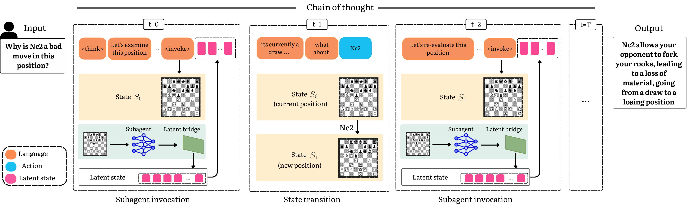
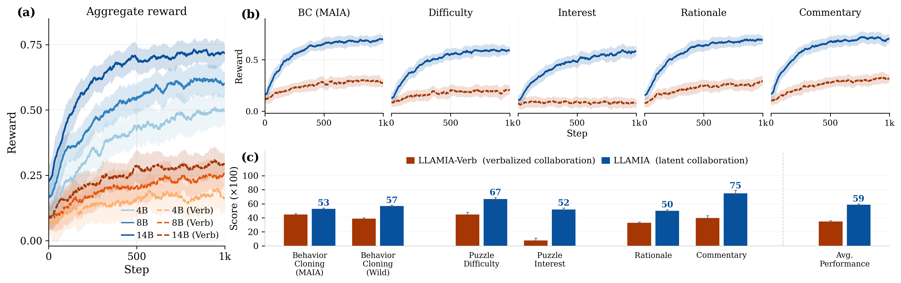
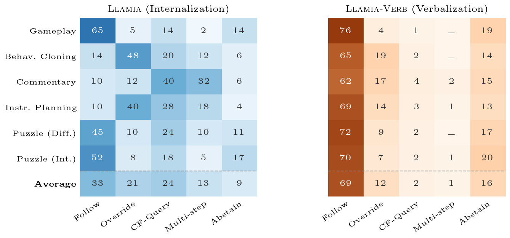
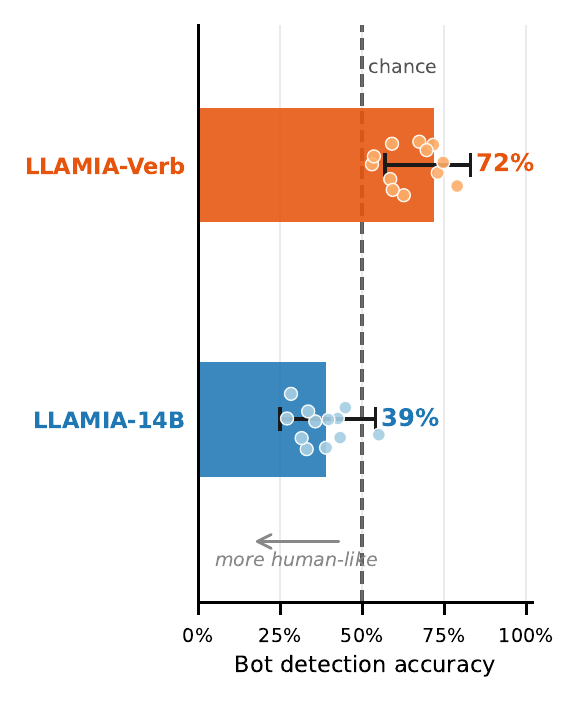
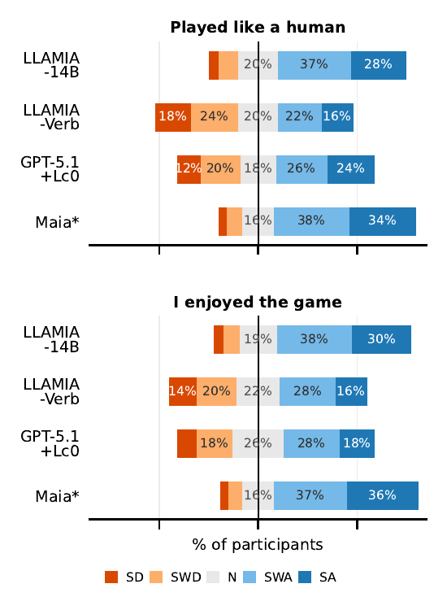
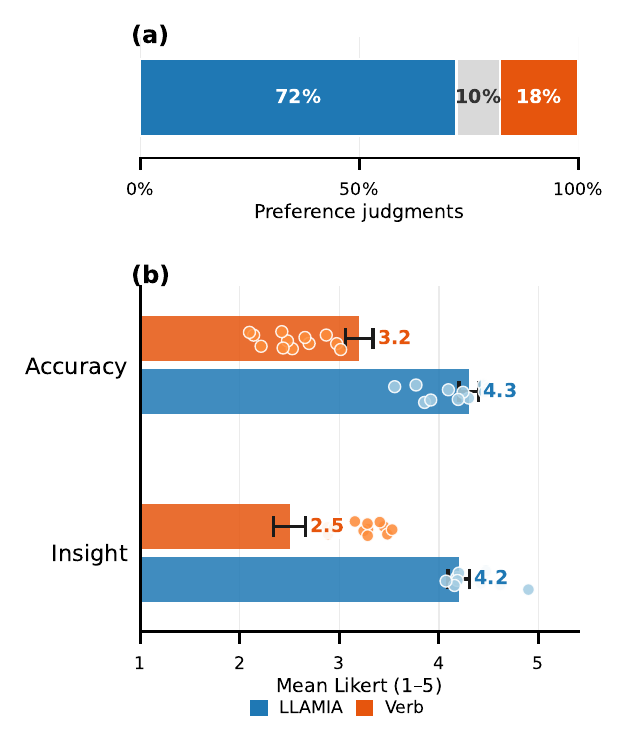
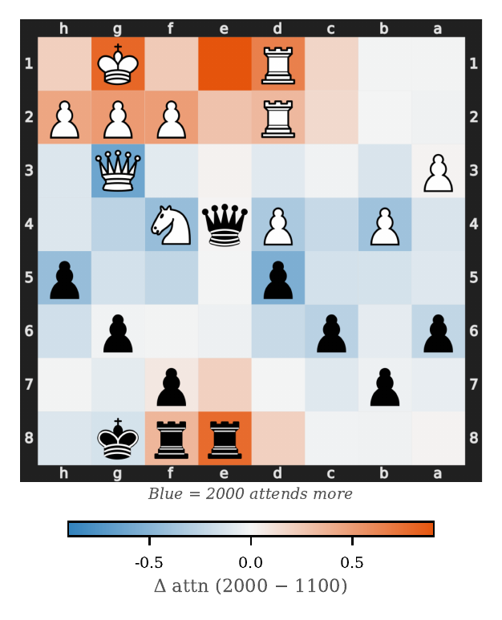

Internalizing Heterogeneous Agents in Language Model Reasoning
Get in touch with us at behavior-in-the-wild@googlegroups.com

Abstract
LLMs are increasingly deployed as orchestrators that coordinate specialized subagents to solve complex tasks through natural language. However, in many important domains like game playing and robotics the strongest available agents are not language models. Integrating non-language agents with LLMs would require verbalization — compressing their rich continuous representations into sparse textual summaries at each interaction step. In this work we introduce the concept of latent state internalization: instead of verbalizing the non-language agent's state, we project its internal continuous representations directly into the LLM's chain of thought as learned state tokens. We show that training LLMs and subagents through internalization and reinforcement learning can solve previously unsolvable tasks, and a single model can outperform existing state-of-the-art task-specific methods trained over 100× more data. To evaluate these collaborative abilities, we introduce LLAMIA-Bench, a suite of six collaborative chess tasks from prominent AI literature spanning behavior cloning, state understanding, and natural-language explanation of actions and policies. These tasks cannot be solved by LLMs or subagents independently, making them a perfect testbed for studying collaboration. Our experiments reveal a consistent verbalization debt: verbalizing the subagent's state consistently trails internalizing it, and this gap does not shrink as the LLM scales from 4B to 14B parameters. A single 14B model, LLAMIA (Large Language and Action Models with Internal Agents), trained under this paradigm matches or exceeds both dedicated task specialists and the strongest verbalization-based pipeline, GPT-5.1 with tool access, across all benchmark tasks, and generalizes out-of-distribution where these specialists collapse.
- Latent state internalization. A paradigm for LLM–non-language-agent collaboration, enabling LLMs to reason over an interleaved chain of language, action, and latent state tokens.
- LLAMIA. A two-stage training framework — self-supervised projector alignment followed by end-to-end RL (DAPO) — yielding a single model that achieves state-of-the-art performance across diverse collaborative tasks, giving closed-weight LLMs faithful access to a subagent's latent expertise.
- Verbalization Debt. Through controlled ablations against LLAMIA-Verb, we define and quantify the performance gap between internalized and verbalized integration, showing it is suboptimal in both performance and compute, and widens on tasks requiring deeper or multi-step collaboration.
- LLAMIA-Bench. A curated benchmark of six chess tasks spanning behavior cloning, puzzle understanding, commentary, and planning — unsolvable by either the LLM or the subagent alone.
Method: Latent State Internalization
An LLM plays chess with access to a pretrained engine exposed through a tool API: functions to read the board
and legal moves, advance the game, and — critically — query the engine's assessment of any position
via get_policy. What that call returns is the variable this paper studies. In the standard
verbalized setting, get_policy returns a text summary: the engine's top moves with prior
probabilities and value estimates. This captures the headline assessment but discards the rest of the engine's
internal state — the full distribution over legal moves, the value landscape across candidate
continuations, and positional features like piece coordination and king safety that interpretability work has
identified in engine hidden layers. Under internalization, the same call additionally projects the engine's
full latent state into k=32 continuous tokens via a learned projection, LatentBridge, and appends
them to the LLM's reasoning trace alongside language and action tokens. The LLM attends over all three token
types jointly, so its attention can selectively read different aspects of the representation at each reasoning
step, rather than being handed one fixed summary regardless of what the step requires.

<invoke>; the current board is passed
through the frozen subagent (Lc0-BT4), and LatentBridge maps its hidden activations into k=32 continuous
latent-state tokens appended to the context. At t=1, conditioned on this state, the LLM emits an
action that advances the environment. At t=2, the LLM chooses to re-invoke, encoding the new board
into a fresh latent state — it decides when to re-invoke rather than re-encoding on every step. Stage 1
trains only LatentBridge on state–policy pairs; Stage 2 jointly fine-tunes it with the LLM via DAPO. The
subagent is frozen throughout.1. Frozen subagent
Lc0-BT4, the strongest open-source chess engine (a 240M-parameter transformer), encodes each board state into a 1024-dim latent representation. It is never updated during training.
2. LatentBridge
A three-layer MLP with GeLU activations projects the engine's latent state into k=32 tokens matching the LLM's hidden size, following projector designs from vision-language models.
3. Stage 1 — projector alignment
With the LLM (Qwen3) frozen, LatentBridge is trained on state–policy pairs from the subagent's self-play, learning to project states the LLM can act on.
4. Stage 2 — DAPO
The LLM and LatentBridge are jointly optimized end-to-end via DAPO. The subagent call is itself part of the policy's action space, so RL also learns when and whether to query it.
LLAMIA-Bench
Existing benchmarks test either the LLM or the subagent, never their collaboration. LLAMIA-Bench spans six tasks drawn from four themes in how AI systems collaborate with domain-expert agents — behavioral imitation, state assessment, comparative explanation, and rationale generation — each unsolvable by either component alone: the subagent produces no language, and the LLM lacks the positional signals that make chess-specific judgments possible. Three evaluation targets are new to this work: Wild BC, three out-of-distribution splits probing generalization to grandmaster play (GM-25), time pressure (Low-Time), and large skill gaps (ΔElo); Puzzle Interest, ranking puzzles by community-derived interestingness — a signal with no verbal proxy in any engine output; and Agadmator-2K, the first large-scale dataset of game-level chess commentary, 1,900 narrated games (∼500 hours) from Agadmator's YouTube channel, built by aligning Whisper transcripts to PGN move sequences and verifying move order with a GPT-4o judge.
| Task | What it measures |
|---|---|
| Behavior Cloning | Move-match accuracy against MAIA Elo buckets (1100–1900) and three OOD splits: GM-25, Low-Time, ΔElo. |
| Puzzle Understanding | Spearman ρ against Lichess-derived Difficulty (Glicko-2) and community-voted Interest. |
| Rationale Prediction | G-eval and BLEU-2 on natural-language move annotation across five semantic categories. |
| Game Commentary | G-eval and BLEU-2 on Agadmator-2K, held out by ascending view count to reduce contamination. |
Key Results
LLAMIA-14B achieves the highest score on all six LLAMIA-Bench tasks, surpassing frontier verbalized systems an order of magnitude larger and remaining competitive with dedicated task-specific finetunes trained on substantially more in-domain data. On behavior cloning, Maia-style experts are trained on tens of millions of chess-specific games against LLAMIA's general-purpose backbone; LLAMIA-14B stays inside the expert band in-distribution and surpasses the strongest expert by a wide margin on the OOD Wild splits. The advantage over GPT-5+Lc0 does not require the 14B backbone — LLAMIA-8B already leads on all six tasks, and LLAMIA-4B on four of six.
| System | Behavior Cloning | Puzzle Understanding | Rationale | Commentary | ||
|---|---|---|---|---|---|---|
| MAIA | Wild | Difficulty | Interest | |||
| Task-Specific Expert | ||||||
| Allie-Adaptive-Search | 55 | 45 | — | — | — | — |
| SCC | — | — | — | — | 34.5 | — |
| Frontier Baselines (5-shot) | ||||||
| GPT-5 (text only) | 28 | 22 | 30 | 12 | 27.0 | 23 |
| GPT-5 + Lc0 | 45 | 40 | 48 | 10 | 37.5 | 55 |
| Qwen3-14B + Lc0 | 39 | 33 | 28 | 5 | 18.8 | 15 |
| Verbalized, DAPO | ||||||
| LLAMIA-Verb-4B | 41 | 34 | 38 | 5 | 25.7 | 23 |
| LLAMIA-Verb-8B | 44 | 37 | 42 | 7 | 29.4 | 34 |
| LLAMIA-Verb-14B | 45 | 39 | 45 | 8 | 33.2 | 40 |
| Latent, DAPO (Ours) | ||||||
| LLAMIA-4B | 50 | 43 | 58 | 38 | 36.0 | 52 |
| LLAMIA-8B | 52 | 46 | 65 | 45 | 42.1 | 66 |
| LLAMIA-14B (ours) | 53 | 49 | 71 | 52 | 45.8 | 75 |
Each cell is a per-task score ×100 (higher is better); Rationale is BLEU-2, Commentary is G-eval, Puzzle Understanding is Spearman ρ ×100. bold = best overall in the column, underline = best non-LLAMIA. Dedicated chess finetunes show only the strongest published entry per task; off-task cells are blank. Full per-scale factorial, confidence intervals, and additional metrics in the paper.
Latent tokens enable new evaluation targets. Puzzle Interest requires ranking positions by community-derived interestingness, a signal that depends on the engine's full policy distribution and value gradients across candidate moves — no verbalized engine output carries these features. Every verbalized system scores ≤12 on Interest regardless of model scale or frontier capability; LLAMIA-14B reaches 52. Verbalization carries zero useful signal for this task, while latent tokens give the LLM direct access to the distributional structure that defines interestingness.

Verbalization Debt
LLAMIA and LLAMIA-Verb share the same 14B backbone, Lc0-BT4 subagent, and DAPO recipe; the only difference is whether the subagent's state reaches the LLM as latent tokens or as verbalized text. We define the resulting performance gap as the verbalization debt. The debt is smallest where the engine's top-k moves already approximate the answer (in-distribution behavior cloning) and largest where the target signal lives in the engine's full policy distribution or value landscape, which has no faithful text equivalent (Interest, Commentary). It persists at every backbone scale we test — on Interest, LLAMIA-Verb-14B scores 8 while LLAMIA-4B already reaches 38 — and it widens throughout training, reaching 2–3× by convergence.
| Task (metric) | Verbalized | Latent | Debt (Δ) |
|---|---|---|---|
| Behavior Cloning, MAIA (move-match) | 45 | 53 | +8 |
| Behavior Cloning, Wild (move-match) | 39 | 49 | +10 |
| Rationale (BLEU-2) | 33.2 | 45.8 | +13 |
| Puzzle Difficulty (Spearman ρ×100) | 45 | 71 | +26 |
| Commentary (G-eval×100) | 40 | 75 | +35 |
| Puzzle Interest (Spearman ρ×100) | 8 | 52 | +44 |
Rows are ordered by the size of the debt. It is smallest where the engine's top-k moves already approximate the target (behavior cloning) and largest where the target signal lives entirely in the policy distribution and value gradients across candidate moves, which text cannot carry (Puzzle Interest: ρ 0.08→0.52, a 6.5× jump).
Collaboration Strategies
Does the integration interface determine how the model learns to use the subagent, or only how well it performs? We classify subagent invocations during evaluation into five recurring strategies and trace their evolution during DAPO training: engine-follow (adopt the top recommendation), consult-then-override (query then diverge), counterfactual query (play a hypothetical move, re-invoke, compare states), multi-step lookahead (chain two or three counterfactual sequences), and abstention (act from language knowledge alone). A GPT-4o judge classifies 500 episodes per task per system (κ=0.78 vs. human raters).

Internalization produces task-specific collaboration; verbalization collapses it. LLAMIA adapts its strategy to the task: engine-follow dominates gameplay (65%), consult-then-override dominates behavior cloning (48%), and counterfactual query dominates commentary (40%). LLAMIA-Verb collapses to engine-follow on every task (62–76%), regardless of what the task requires. The verbalized channel returns the same compressed summary no matter how the model queries it, so RL converges on a single use pattern.
Human Evaluation
Skilled players (n=12, all ≥1700 Elo) evaluated LLAMIA on gameplay indistinguishability and commentary quality against LLAMIA-Verb, GPT-5.1+Lc0, and Maia.




Behavioral signatures such as time-pressure blunders and skill-appropriate piece saliency emerge from latent-state conditioning alone; LLAMIA receives no human-move supervision, unlike Maia, which is trained directly on millions of move distributions. On commentary, both systems achieve comparable factual accuracy, but the gap concentrates on strategic insight: text preserves what is happening on the board, but explaining why a move is strong requires representational features — policy gradients, value topology, look-ahead depth — that do not survive verbal compression.
BibTeX
@inproceedings{harini2026llamia,
title={Internalizing Heterogeneous Agents in Language Model Reasoning},
author={Harini, S I and Singh, Somesh and Singla, Yaman K
and Shah, Rajiv Ratn and Doermann, David and Krishnamurthy, Balaji},
booktitle={Proceedings of the 2026 Conference on Empirical Methods in Natural Language Processing (EMNLP)},
year={2026}
}